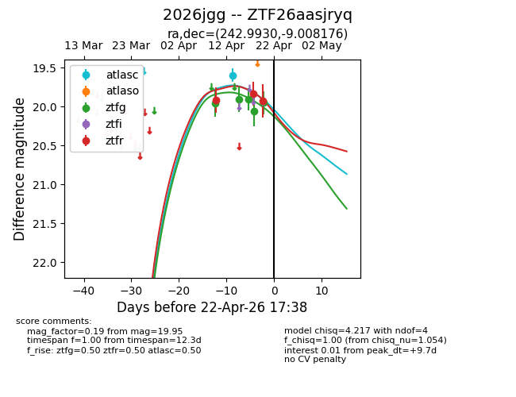
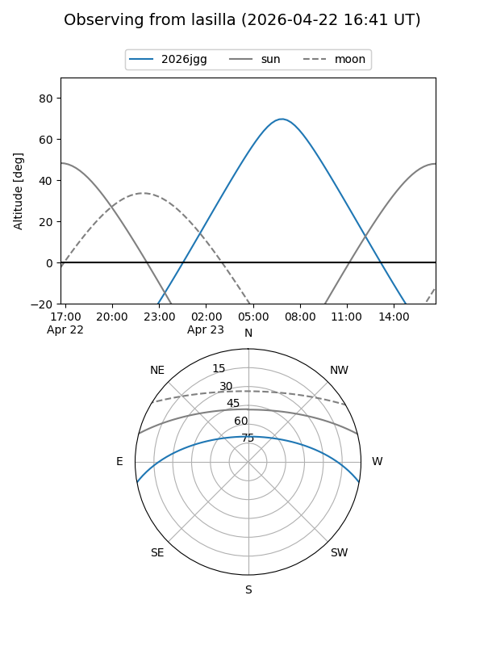
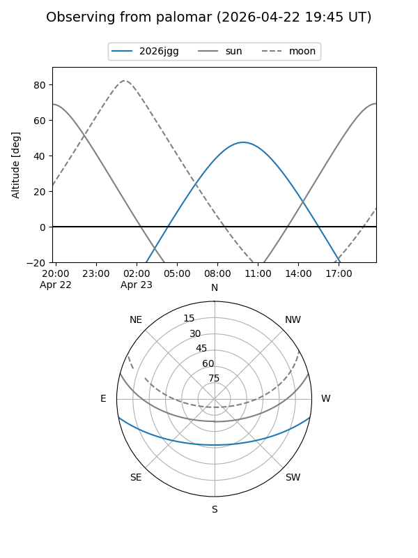

2026jgg
Target 2026jgg at 2026-04-22 17:39
Aliases and brokers:
FINK: link
Lasair: link
ALeRCE: link
TNS: link
YSE: link
alt names
ZTF26aasjryq (ztf,fink_ztf)
2026jgg (tns,yse)
Coordinates:
equatorial (ra, dec) = 242.9930,-9.00818
equatorial (HMS+DMS) = 16:11:58.33,-09:00:29.44
galactic (l, b) = (3.4816,+29.47543)
Flags:
Photometry:
last atlasc=19.59, ztfg=19.95, ztfr=19.92
1 atlasc, 5 ztfg, 3 ztfr detections
Lightcurve

Visibility


Additional plots